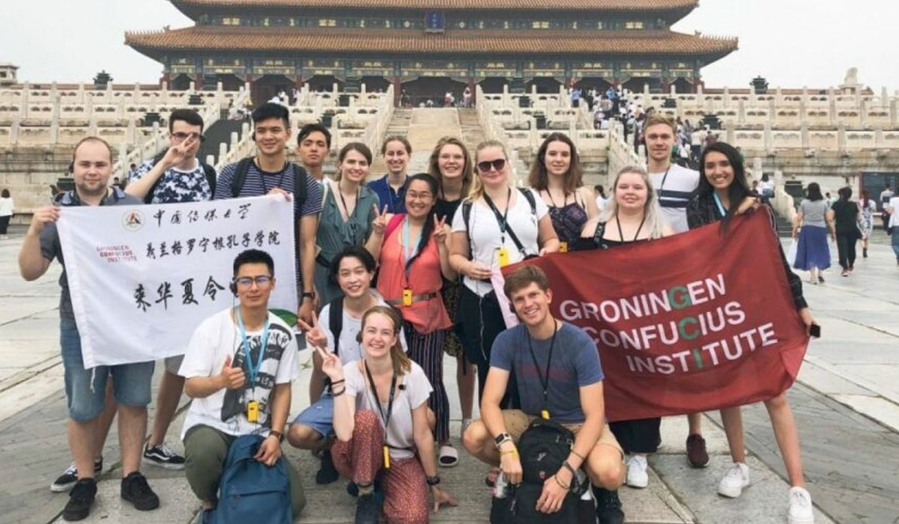

About Us
Who We Are
Summer Camp China Program is a wonderfully immersive experience for kids & teens. It’s the best way to spend the summer – exploring the Chinese culture, visiting famous tourist Chinese sites, and learning Mandarin Chinese together with children from all over the world.
Students will get a chance to experience traditional Chinese culture through various cultural activities such as Chinese calligraphy, tea ceremony, cooking classes, paper-cutting, making shadow puppets, and many more.
Our Summer Camp China Program has a variety of choices including Half-day Camp, Day Camp, Full Camp and Homestay Camp to meet your individual requirements.
